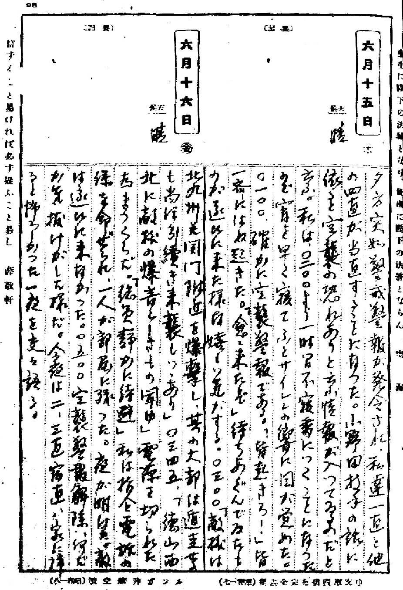
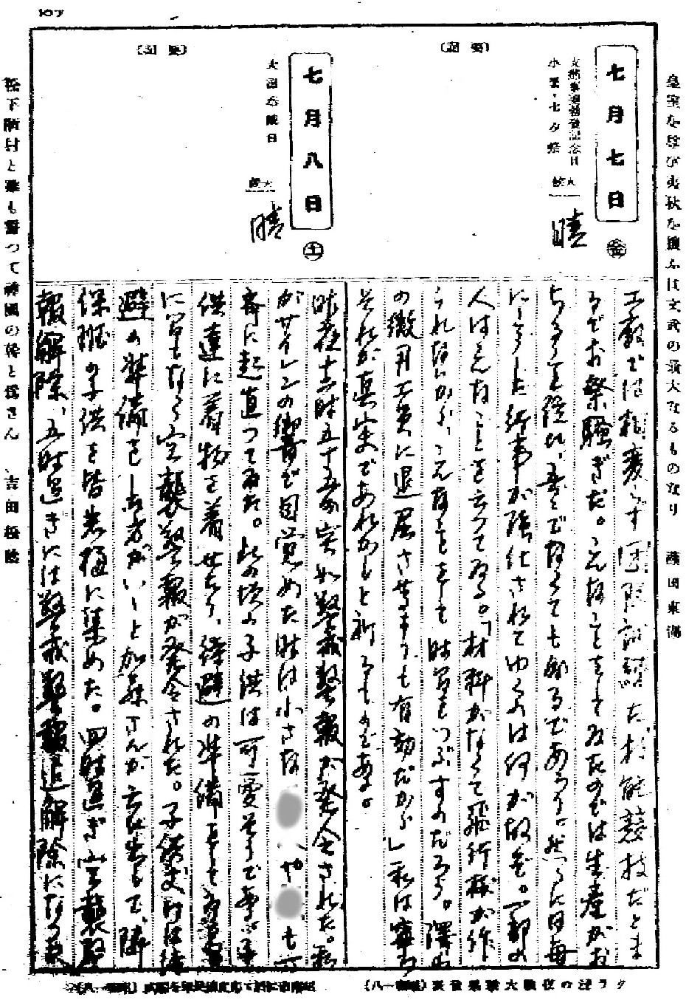
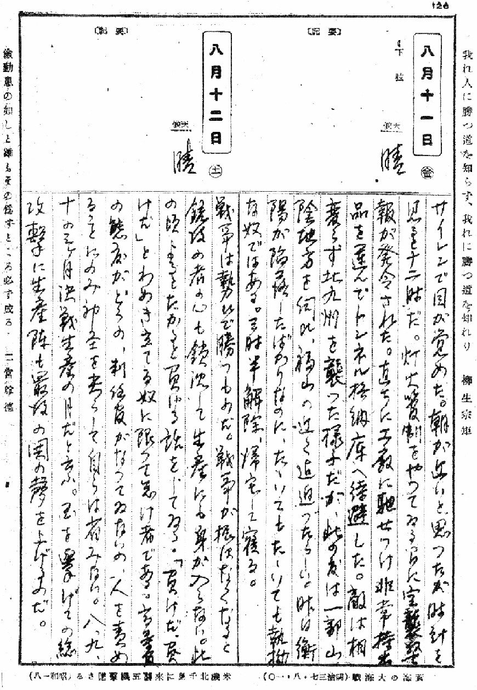
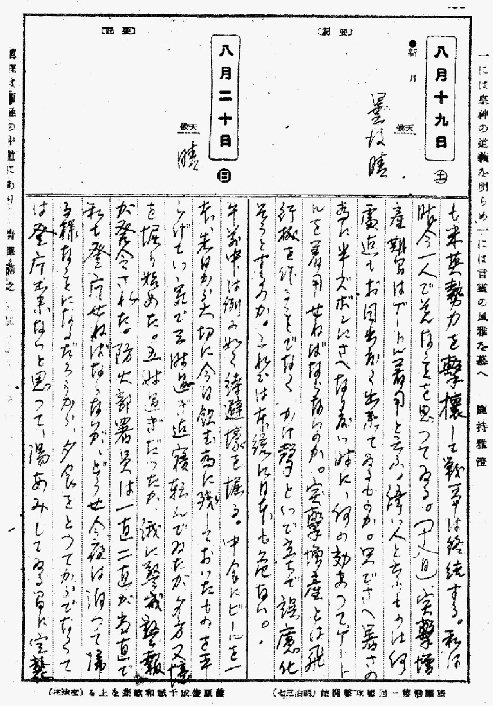
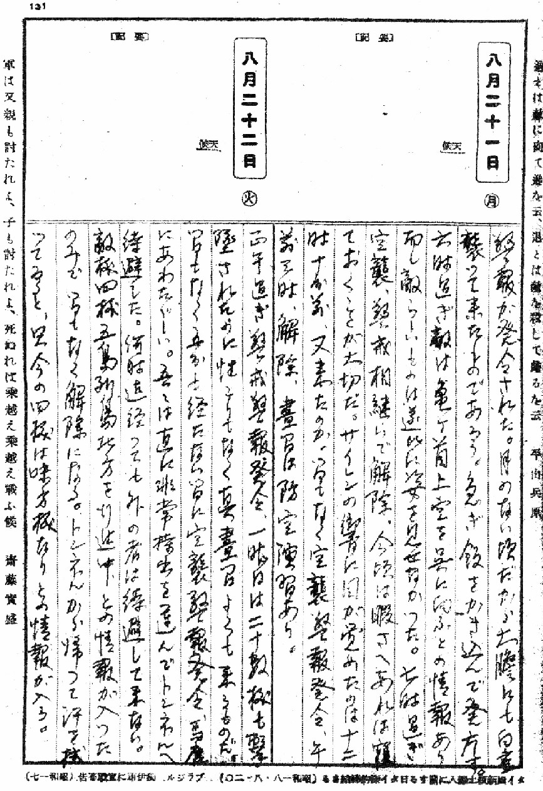
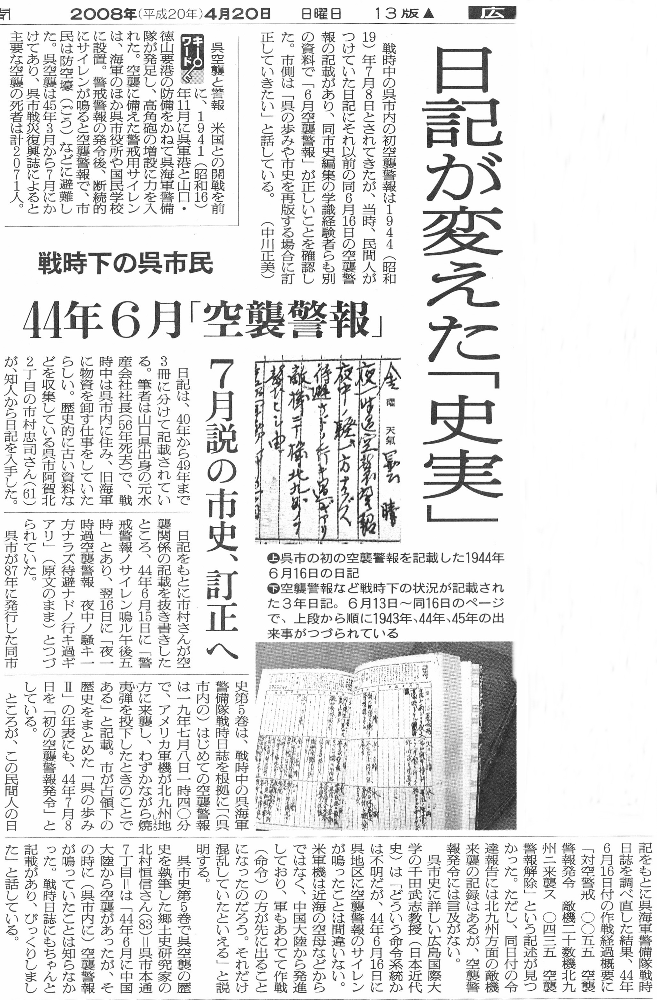

呉地区最初の警戒警報・空襲警報の発令
「B-29爆撃機による日本本土空襲」
日本最初の警戒警報と空襲警報は八幡（北九州）や呉で発令された。
朝日新聞が『日記が変えた「史実」』という記事で、呉地区最初の警戒警報・空襲警報の発令は、
1944（昭和19）年4月16日で、呉市史の記録を訂正する必要があると報道した。
「呉戦災を記録する会」も、手持ちの資料で調査すると朝日新聞の指摘の通りであることが
判明するとともに、神垣日記を基に、更に詳しい状況が判明した。
１、神垣日記
《1944(昭和19)年》6月15日 晴

当日の日記
夕方突如警戒警報が発令された。私達一直と他の四直が当直することになった。
小野田技手の話に依ると空襲の恐れがあると云う情報が入っているのだと云う。
私は〇二〇〇より一時間不寝番につくことになったので宵を早く寝てふとサイレンの響に目が覚めた。
〇一〇〇、確かに空襲警報である。「皆起きろ！」皆一斉にはね起きた。
「愈々来たぞ」待ちあぐんでゐたものが遂ひに来た様な嬉しい気がする。
〇三〇〇「敵機は北九州と関門付近を爆撃し、其の大部は遁走せるも尚ほ引続き来襲しつつあり」
〇三四五、「徳山西北に敵機の爆音らしきもの聞ゆ」、電源を切られた為まっくらだ。
「総員静かに退避」私は指令電話の係りを命ぜられ、一人が部屋に残った。夜が明けた。
敵は遂ひに来なかった。〇五〇〇空襲警報解除、なんだか気抜けがした様だ。
今夜は二、三直宿直、家に帰ると怖かった一夜を交々語る。
《1944(昭和19)年》7月8日 晴

当日の日記
昨夜十二時五十五分突如警戒警報が発令された。
私がサイレンの響で目覚めた…中略……此の頃の子供は可愛そうである。
子供達に着物を着せたり、待避の準備をしてゐる間に間もなく空襲警報が発令された。
子供丈は待避の準備をした方がいいと、隣保班の子供を皆岩樋に集めた。
四時過ぎ、空襲警報解除、五時過ぎには警戒警報迄解除になった。
《1944(昭和19)年》8月11日（金）晴

当日の日記
サイレンで目が覚めた。朝が近いと思ったが時間を見ると12時だ。
灯火管制をやってゐる間に空襲警報が発令された。
直ちに工廠に馳せつけ非常持ち出し品を選んでトンネル格納庫へ待避した。
敵は相変わらず北九州を襲った様子だが、此の度は一部山陰方面を伺ひ福山の近く迄通ったらしい。
昨日衡陽が陥落したばかりなのだ。たたいてもたたいても執拗な奴ではある。
三時半解除、帰宅して寝る。
《1944(昭和19)年》8月20日（日）晴 ～ 8月21日（月）

当日の日記
前半略・・・五時過ぎだったか、俄に警戒警報が発令された。
防火部署員は一直二直が当直で私も登庁せねばならないが、どうせ今夜は泊まって帰る様なことになるだろうから、夕食をとってからでなくては登庁出来ないと思って、湯あみしている間に空襲警報が発令された。
月のない頃だから土曜にも白昼襲って来たものであろう。急ぎ飯をかき込んで登庁す。
六時過ぎ敵は亀が首上空を呉に向かふとの情報あり。而し敵らしいものは遂ひに姿を見せなかった。
七時過ぎ空襲、警戒警報相継いで解除。今頃は暇さへあれば寝ておくことが大切だ。
サイレンの響に目が覚めたのは十二時十分前、又来たのか、間もなく空襲警報発令、午前三時、解除、昼間は防空演習あり。
《1944(昭和19)年》8月22日（火）

当日の日記
正午過ぎ警戒警報発令、一昨日は二十数機も撃墜されたのに性こりもなく真昼間よくも来るものだ。
間もなく五分も経たない間に空襲警報発令、馬鹿にあわただしい。
吾々は直に非常持ち出しを選んでトンネルへ待避した。何時迄経っても外の者は待避して来ない。
敵機四機五島列島北方を行進中との情報が入ったのみで間もなく解除になる。
トンネルから帰って汗を拭っていると、唯今の四機は味方機なりとの情報が入る。
２、《 簡単な、当時の状況説明 》
B-29爆撃機と第20航空軍
1944年3月末にB-29が完成し、統合参謀本部は4月4日、直属の新第20航空軍をアーノルド将軍を司令官として、全世界のB-29の爆撃作戦の権限を与えた。
最初のB-29爆撃機部隊が130機、5月8日にインドのカルカッタ・チャックリア飛行場に配備された。
4月21日、中国へ向かうB-29爆撃機は日本の隼戦闘隊と遭遇し、交戦して実在が知れた。
司令官のウルフ将軍と副司令官が中国成都の広漢飛行場へ4月24日到着した。
日本軍は4－5月に「1号作戦」を行い、桂林・柳州を基地とするB-29爆撃機の日本本土爆撃を阻止しようと図ったが、成都を基地にした空襲は想定していなかった。
成都の基地には83機のB-29爆撃機が配備されていたが、6月14日の午後遅く、75機の「超空の要塞」B-29 は各機２トンの爆弾を搭載して八幡製鉄所への爆撃に向かった。
故障もあり63機が八幡に到着し、日本への初空襲を行った。
八幡製鉄所の被害は軽微だったが、日本および世界に与えた政治的・心理的な影響は大きかった。
八幡への空襲は、1944年（昭和19年）6月15日深夜（16日）と7月8日昼間および
8月20日ー21日昼間の計3回行われ、八幡市民は大きな被害を受けた。
八幡や呉で警戒警報が、早くも15日夕方に発令されたのは、成都から揚子江（長江）沿いに北九州へ飛来するのを武漢や上海の日本軍が発見し、通報したからだと思われる。
空襲警報は深夜16日の1時に発令されている。
１．朝日新聞の報道

朝日新聞2008.4.20.
日記が変えた「史実」
戦時中の呉市内の初空襲警報は１９４４（昭和19）年７月８日とされてきたが、当時、民間人がつけていた日記にそれ以前の同６月16日の空襲警報の記載があり、同市史編集の学識経験者らも別の資料で「６月空襲警報」が正しいことを確認した。
市側は「呉の歩みや市史を再版する場合に訂正していきたい」と話している。
（中川正美）
戦時下の呉市民
４４年６月「空襲警報」
（キーワード）
呉空襲と警報
米国との開戦を前に、１９４１（昭和16）１１月に呉軍港と山口・徳山要港の防備をかねて呉海軍警備隊が発足し、高角砲の増設に力を入れた。
空襲に備えた警戒用サイレンは、海軍のほか呉市役所や国民学校に設置。
警戒警報の発令後、断続的にサイレンが鳴ると空襲警報で、市民は防空壕（ごう）などに避難した。
呉空襲は45年３月から７月にかけてあり、呉市戦災復興誌によると主要な空襲の死者は計２０７１人。
戦時下の呉市民
４４年６月「空襲警報」
７月説の市史、訂正へ
日記は、40年から49年まで３冊に分けて記載されている。
筆者は山□県出身の元水産会社社長（56年死去）で、戦時中は呉市内に住み、旧海軍に物資を卸す仕事をしていたらしい。
歴史的に古い資料などを収集している呉市阿賀北２丁目の市村忠司さん（61）が、知人から日記を入手した
日記をもとに市村さんが空襲関係の記載を抜き書きしたところ、44年６月15日に「警戒警報ノサイレン鳴ル午後五時」とあり、翌16日に「夜一時過空襲警報 夜中ノ騒ギガ一方ナラズ待避ナドノ行年過ギアリ」 （原文のまま）とつづられていた。
呉市が87年に発行した同市史第５巻は、戦時中の呉海軍警備隊戦時日誌を根拠に
「（呉市内の）はじめての空襲警報は一九年七月八日一時四〇分で、アメリカ軍機が北九州地方に来襲し、わずかながら焼夷弾を投下したときのことである」と記載。
市が占頷下の歴史をまとめた「呉の歩みⅡ」の年表にも、44年７月８日を「初の空襲警報発令」としている。
ところが、この民間人の日記をもとに呉海軍警備隊戦時日誌を調べ直した結果、44年６月16日付の作戦経過概要「対空警戒 ○○五五 空襲警報発令 敵機二十数機北九州二来襲ス ○四三五 空襲警報解除」という記述が見つかった。
ただし、同日付の令達報告には北九州方面の敵機来襲の記録はあるが、空襲警報発令には言及がない。
呉市史に詳しい広島国際大学の千田武志教授（日本近代史）は「どういう命令系続かは不明だが、44年６月16日に呉地区に空襲警報のサイレンが鳴ったことは間違いない。
米軍機は近海の空母などからではなく、中国大陸から発進しており、軍もあわてて作戦（命令）の方が先に出ることになったのだろう。それだけ混乱していたといえる」と説明する。
呉市史第５巻で呉空襲の歴史を執筆した郷土史研究家の北村恒信さん（83）＝呉市本通
７丁目＝は「44年６月に中国大陸から空襲があったが、その時に（呉市内に）空襲警報が鳴っていたことは知らなかった。戦時日誌にもちやんと記載があり、びっくりしました」と話している。
（朝日新聞 2008（平成20）年4月20日（日）広島地方版
トップページに戻る